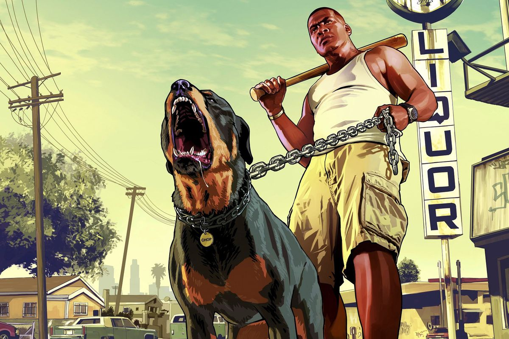

There are many exiting games that you can play through your computer and mobile and many other devices.
Here are some list of games you can play through your pc. 1)GTA-5. 2)FIFA-22 3)TEKKEN 4)WATCH DOGS
GTA 5

FIFA 22
TEKKEN
WATCH DOGS